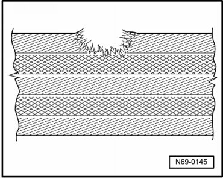
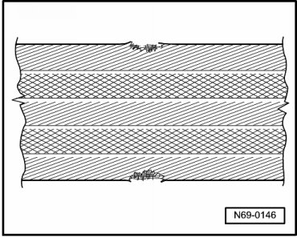
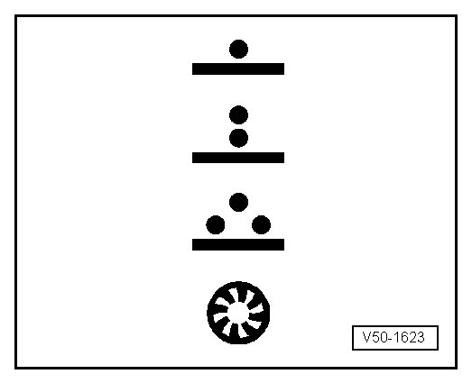

Safety Instructions
Seat Belts, Checking
CAUTION!
After every accident, seat belt system must be checked systematically. If damage is determined when checking the test points, customer must be informed regarding necessity of changing belts.
Test Points:
• Check belt strap
• Check inertia reel (locking effect)
• Visually check belt lock
• Functionally check belt lock
• Check belt guides and lock tongue
• Check securing parts and anchorage points
• Check lap belt retractor
• If customer refuses to have damaged belts replaced, appropriate note should be made.
Belt Strap, Checking
- Pull belt completely out of inertia reel or lap belt adjustment tongue.
- Check belt for dirt and, if necessary, wash with mild soap solution => Instruction Manual.
• If either of following illustrated examples of damage (1 and 2) are determined on accident vehicle - replace seat belt and belt lock completely.
• If damage as illustrated under points 1, 2 or 3 is determined on a vehicle which has not been involved in an accident, it is sufficient to replace damaged belt only.
1 - Cut, torn or chafed belt

2 - Webbing loops on belt edge torn

3 - Burn marks from cigarettes or similar

Inertia Reel Locking Effect, Checking
Inertia reel has two locking functions.
• First locking function is initiated by belt being jerked out of reel (belt extraction acceleration).
Checking
- Pull belt out of inertia reel with sudden jerk.
• No locking effect - replace seat belt complete with lock.
• If difficulties are experienced when pulling belt out or reeling belt in, first check whether inertia reel is in the correct position.
• Second locking function is initiated by change in vehicle movement sequence (vehicle-dependent locking function).
Check
- Put seat belt on.
- Accelerate vehicle to 20 km/h and then carry out emergency braking with foot brake.
• If during braking procedure belt is not locked by locking mechanism, seat belt complete with belt lock must be replaced.
CAUTION!
For safety reasons, road test should be carried out on traffic-free stretch to ensure that other motorists/pedestrians are not endangered.
Belt Lock, Visual Check
- Check belt lock for cracks and fracturing.
• If damage is determined, replace seat belt complete with belt lock.
Belt Lock, Functional Check
Checking locking mechanism:
- Push lock tongue into belt lock until it engages audibly. Check whether locking mechanism is properly engaged by giving belt firm pull.
• If belt tongue fails only once to engage properly in belt lock during minimum of 5 tests, seat belt must be replaced complete with belt lock.
Checking release mechanism:
- Release seat belt by depressing button on belt lock with finger pressure. When belt is slack, lock tongue must spring out of belt lock on its own.
• Carry out minimum of 5 tests. If belt tongue fails only once to spring out of lock, seat belt must be replaced complete with belt lock.
CAUTION!
Under no circumstances whatsoever may lubricant be used to eliminate noise or stiffness at belt lock buttons.
Belt Guides and Lock Tongues, Checking
Plastic-covered guides show very fine parallel scoring, after strain on belt system (when belt has been worn during accident). (Wear which has been brought about by frequent belt use can be recognized by smooth signs of wear which are free of scoring).
- Examine for deformation, fracturing and cracks in plastic.
• If scoring and/or damage is determined, replace seat belt complete with belt lock.
Securing Parts and Anchorage Points, Checking
• Lock securing strap/bracket deformed (stretched)
• Height adjuster not functioning
• Anchorage point (seat, pillar or vehicle floor) signs of distortion or thread damage
• If damage is determined on such parts - replace seat belt complete with belt lock.
• Replace anchorage points.
• In case of damage which is not result of an accident (e.g. wear), only the part which is actually damaged need be replaced.